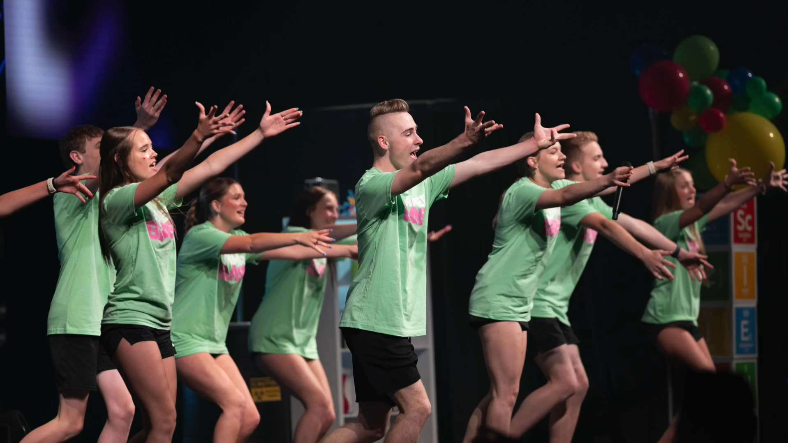

Leadership Foundation
Relevant Kids Worship
Relevant Community Church • Elkhorn, Nebraska
At Relevant Community Church I spent two years collaborating with Olivia Goodman, one other highschool co-leader, to run and expand the thriving kids worship team. Through my time at Relevant I truly learned what a successful group looks like and I developed the skills that it takes to lead a efficient team of volunteers.
Each Sunday morning I would help to lead worship on stage and throughout the week I would spend my time coordinating volunteers, training new members, and choreographing new dances.
My time at Relevant allowed me to gain experience in running and improving a highly-functioning team and helped me develop the foundation in leadership needed to help other churches build their own teams.